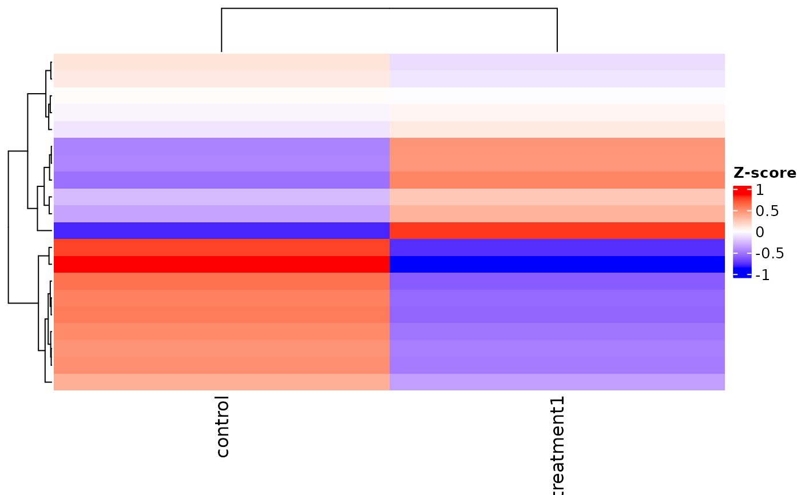
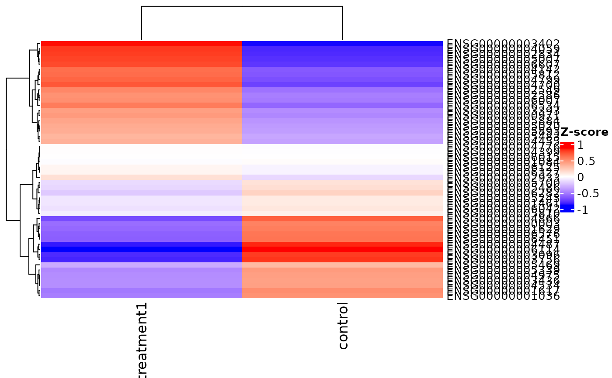

Summarizes expression for selected genes/groups via ComplexHeatmap
with optional transformations and annotations. With only a VISTA
object, the function will plot the top variable genes across all samples.
Usage
get_expression_heatmap(
x,
genes = NULL,
top_n = 50,
sample_group = NULL,
group_column = NULL,
value_transform = c("zscore", "log2", "raw"),
summarise_replicates = TRUE,
summarise_method = c("mean", "median"),
convert_rowmeans = FALSE,
display_id = NULL,
display_from = NULL,
display_orgdb = NULL,
repair_genes = FALSE,
show_row_names = NULL,
label_size = 10,
label_specific_rows = NULL,
label_specific_rows_gp = grid::gpar(fontsize = 5),
show_column_names = TRUE,
cluster_rows = TRUE,
show_row_dend = TRUE,
cluster_columns = TRUE,
kmeans_k = NULL,
annotate_columns = FALSE,
cluster_by = NULL,
column_anno_palette = "Dark 3",
column_anno_colors = NULL,
color_default = TRUE,
col = NULL,
heatmap_name = NULL,
show_heatmap_legend = TRUE,
return_type = c("plot", "data", "both"),
...
)Arguments
- x
A
VISTAobject.- genes
Optional character vector of gene identifiers to display. When omitted, VISTA selects the top variable genes across the included samples.
- top_n
Integer number of genes to select automatically when
genes = NULL. Defaults to50.- sample_group
Character vector of group labels specifying which samples to include (based on the selected grouping column).
- group_column
Optional column name in
sample_infoused to interpretsample_group.- value_transform
One of
"zscore","log2", or"raw"controlling how expression values are transformed.- summarise_replicates
Logical; average replicates per group before plotting when
TRUE.- summarise_method
"mean"or"median"summarization used whensummarise_replicates = TRUE.- convert_rowmeans
Logical; subtract row means prior to plotting.
- display_id
Optional ID/column name to use for row labels. If supplied
- display_from
Optional source ID type for mapping (used when
display_id- display_orgdb
Optional
OrgDbobject used for ID mapping when- repair_genes
Logical; if
TRUE, splitgene_idstrings such asID:SYMBOLto display the symbol.- show_row_names
Logical; display row names (genes) beside the heatmap. When
NULL, VISTA turns labels on automatically for auto-selected genes.- label_size
Numeric font size for row names.
- label_specific_rows
Optional character vector of row names to highlight via
anno_mark().- label_specific_rows_gp
grid::gpar()object controlling the highlighted row labels.- show_column_names
Logical; draw column names when
TRUE.- cluster_rows
Logical; cluster rows when drawing the heatmap.
- show_row_dend
Logical; display the row dendrogram.
- cluster_columns
Logical; cluster columns.
- kmeans_k
Optional integer specifying the number of k-means clusters to compute for rows.
- annotate_columns
Logical or character vector.
TRUEadds thegroup_columnannotation and also includescluster_bywhen supplied; a character vector adds multiple annotations fromsample_info.- cluster_by
Optional annotation column used to split/cluster columns. Defaults to the first annotation column when
annotate_columnsis enabled.- column_anno_palette
Qualitative palette name used for the column annotation.
- column_anno_colors
Optional named list of annotation color vectors. Each element should be a named character vector keyed by the levels of one annotation column.
- color_default
Logical; use the default blue-white-red palette when
TRUE. Set toFALSEto supplycol.- col
Optional
circlize::colorRamp2function used whencolor_default = FALSE.- heatmap_name
Optional legend title.
- show_heatmap_legend
Logical; display the heatmap legend.
- return_type
One of
"plot"(default),"data", or"both". The legacy values"heatmap"and"clusters"are still accepted and warn.- ...
Additional arguments passed to
ComplexHeatmap::Heatmap().
Value
A ComplexHeatmap::Heatmap object, a tibble of k-means cluster
assignments, or a list of both, depending on return_type.
A ComplexHeatmap object, a cluster data frame, or a list containing
both depending on return_type.
Examples
v <- example_vista()
genes <- head(rownames(v), 20)
if (requireNamespace('ComplexHeatmap', quietly = TRUE) &&
requireNamespace('circlize', quietly = TRUE)) {
hm <- get_expression_heatmap(
v,
genes = genes,
sample_group = unique(as.character(sample_info(v)$cond_long)),
return_type = 'heatmap'
)
ComplexHeatmap::draw(hm)
}
#> Warning: `return_type = "heatmap"` in `get_expression_heatmap()` is deprecated. Use `return_type = "plot"` instead. It becomes defunct in VISTA 1.4.0.
#> This warning is displayed once every 8 hours.

v <- example_vista()
if (requireNamespace("ComplexHeatmap", quietly = TRUE) &&
requireNamespace("circlize", quietly = TRUE)) {
hm <- get_expression_heatmap(v, return_type = "plot")
ComplexHeatmap::draw(hm)
}
